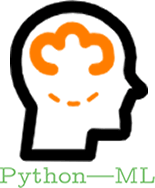

Python机器学习算法入门教程
机器学习（Machine Learning，简称 ML）是人工智能领域的一个分支，也是人工智能的核心，其涉及知识非常广泛，比如概率论、统计学、近似理论、高等数学等多门学科。
机器学习的目的是设计、分析一些让计算机可以自动“学习”的算法，最终让计算机拥有像人类一样的智慧，甚至于超越人类。这一结果的实现，要得益于机器学习算法（Machine Learning Algorithms），它提供了一整套解决问题的方案和思路，即先做什么、再做什么、最后做什么。
机器学习的最主要的一项工作就是“训练模型”，训练模型的过程就是机器学习算法实现的过程，这里的算法和我们经常提及的算法有些区别，比如插入排序、归并排序等，它们的结果都是“计算出来的”，只要确定输入，就可以给定一个值，而机器学习的算法是“猜”出来的，既然是猜，那么就会有对有错，机器学习会根据猜的“结果”，不断的优化模型，从而得出正确率最高的“结果”。
机器学习的学习形式可以分为两大类：
每一类学习形式都对应着相应的算法，比如线性回归算法、KNN 分类算法、朴素贝叶斯分类算法、支持向量机算法等等，并且这些算法都有与其相适用的场景，本套教程将对上述算法的原理和应用做详细的介绍。
本套机器学习算法教程推崇“学以致用”，使用机器学习算法解决实际问题才是学习者的最终目的，所以教程中还会涉及如何将机器学习算法应有到实际场景中。除此之外，通过对本教程的学习，您还可以熟练掌握 Python 机器学习算法库 sklearn 的使用。
机器学习的目的是设计、分析一些让计算机可以自动“学习”的算法，最终让计算机拥有像人类一样的智慧，甚至于超越人类。这一结果的实现，要得益于机器学习算法（Machine Learning Algorithms），它提供了一整套解决问题的方案和思路，即先做什么、再做什么、最后做什么。
如果把机器学习比作一列火车的话，那么机器算法就是火车头，引领你成功抵达目的地。
Python机器学习
就当下而言，Python 无疑是机器学习领域最火的编程语言，这得益于 Python 对科学计算的强大支持。因此，本套教程中关于机器学习算法的代码均采用 Python 机器学习库 sklearn 编写。机器学习的最主要的一项工作就是“训练模型”，训练模型的过程就是机器学习算法实现的过程，这里的算法和我们经常提及的算法有些区别，比如插入排序、归并排序等，它们的结果都是“计算出来的”，只要确定输入，就可以给定一个值，而机器学习的算法是“猜”出来的，既然是猜，那么就会有对有错，机器学习会根据猜的“结果”，不断的优化模型，从而得出正确率最高的“结果”。
机器学习的学习形式可以分为两大类：
- 有监督学习
- 无监督学习
每一类学习形式都对应着相应的算法，比如线性回归算法、KNN 分类算法、朴素贝叶斯分类算法、支持向量机算法等等，并且这些算法都有与其相适用的场景，本套教程将对上述算法的原理和应用做详细的介绍。
教程特点
机器学习算法，毫无疑问是比较难学的，它不仅拥有望而生畏的数学公式，还有晦涩难懂的逻辑思路。本教程尽量以通俗易懂的方式讲解所有算法，由于教程中会涉及较多的数学知识，我们在保证知识严谨性的基础上，尽量绕开繁琐、难懂的数学定义，让您更容易理解，从而尽快实现机器学习算法入门。本套机器学习算法教程推崇“学以致用”，使用机器学习算法解决实际问题才是学习者的最终目的，所以教程中还会涉及如何将机器学习算法应有到实际场景中。除此之外，通过对本教程的学习，您还可以熟练掌握 Python 机器学习算法库 sklearn 的使用。
读者和阅读条件
本套教程的目标读者是想要学习 Python 机器学习算法的学生、程序员、研究人员或者爱好者，以及想要知道机器学习算法是什么和怎么用的读者。由于教程中代码是基于 Python 编写的，如果您对 Python 语言有较好的掌握，那么学习本教程将事半功倍，关于 Python，您可以跳转到《Python教程》进行系统学习。猛击这里开始学习➜关注公众号「站长严长生」，在手机上阅读所有教程，随时随地都能学习。
不定期发布学习路线+书籍文档+优质视频，为初学者指点迷津。
绑定网站登录功能，再也不用担心密码丢失。
编程11年，建站10年，创业7年，写作6年，既有硬知识，也有软技能。
长期更新，坚持原创，敢说真话，凡事有态度。

微信扫码即可关注